Casas · Parnamirim, RN · 2025
Casa Solaris
Lajes em balanço, pedra e madeira sob a luz do fim de tarde.

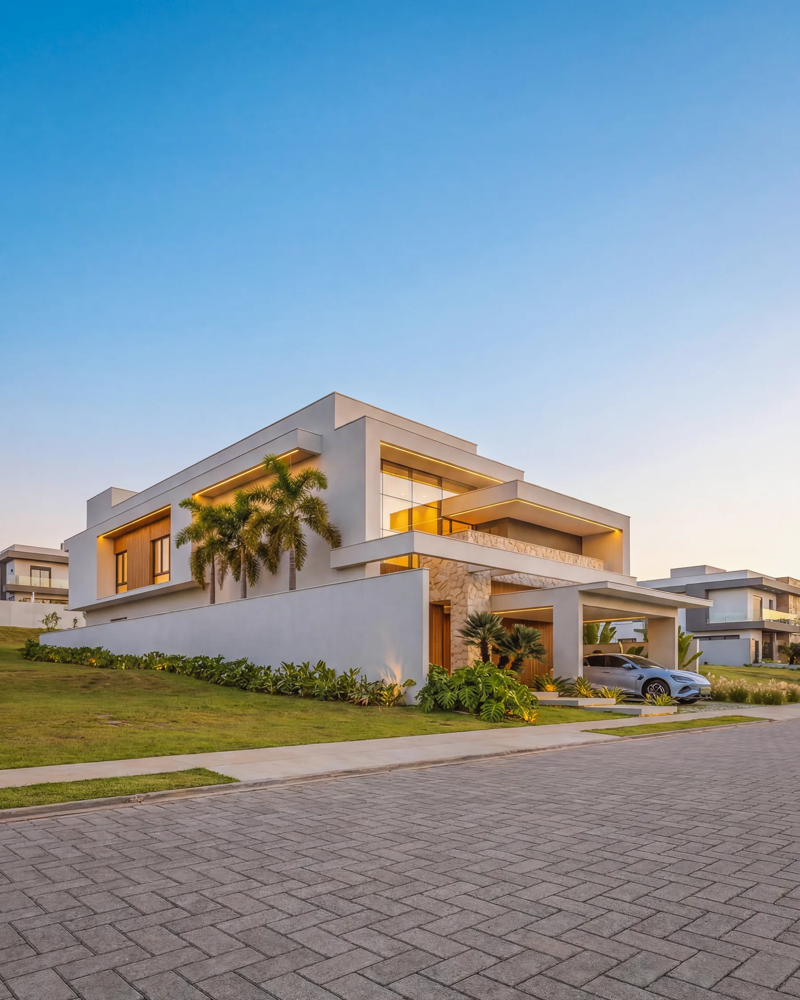

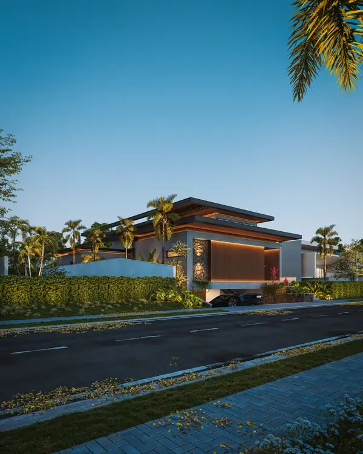

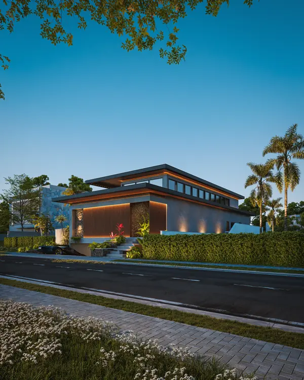

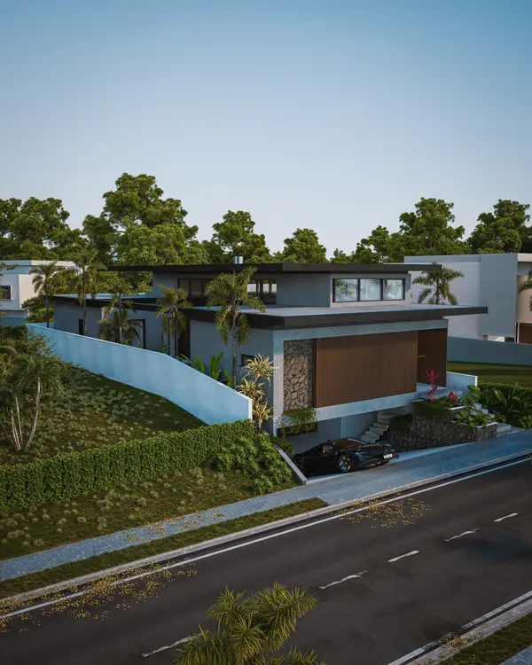

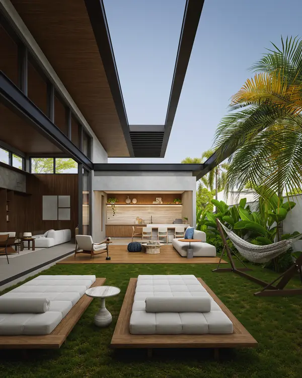

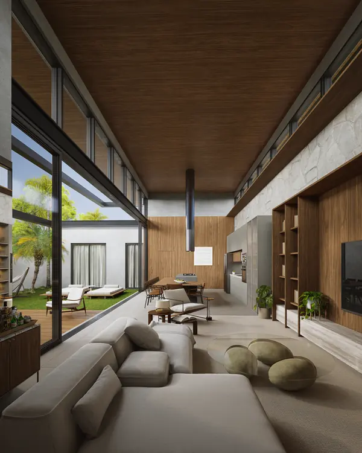

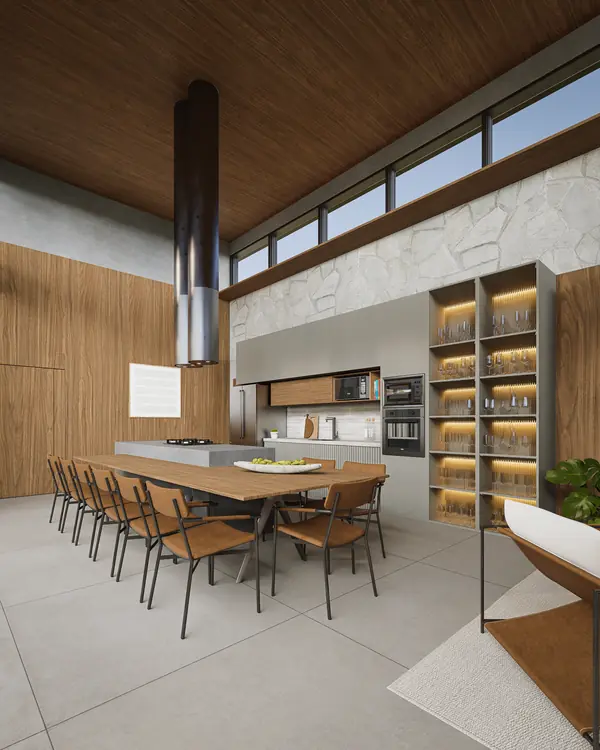

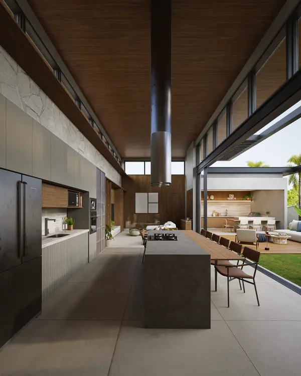

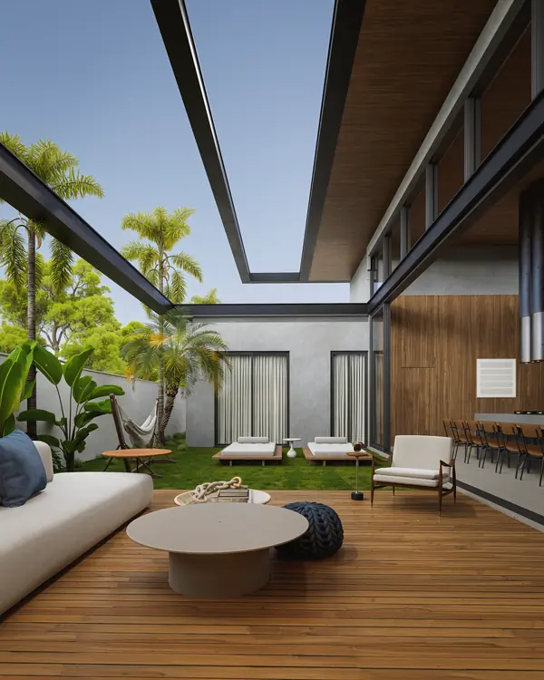

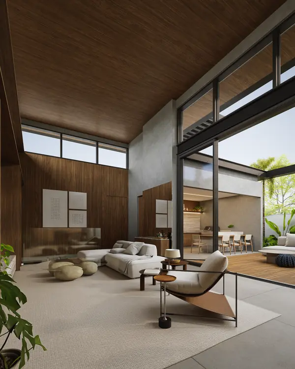

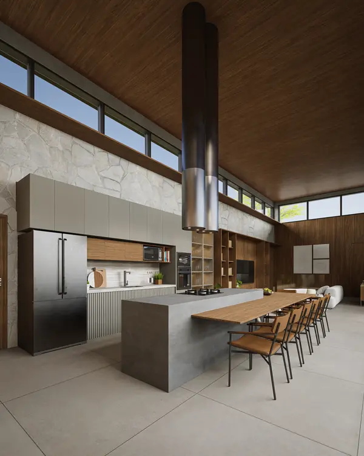
Sobre o projeto
A Casa Solaris manifesta a força de uma arquitetura contemporânea marcada pelo impacto visual e pela elegância funcional. Localizada em Parnamirim/RN, a residência de 290,00 m² destaca-se por sua estética de vanguarda, onde a sobreposição de volumes puristas, a presença marcante de lajes horizontais e uma paleta rigorosa de materiais criam uma presença arquitetônica única dentro do condomínio.
O partido arquitetônico priorizou a privacidade e a intimidade dos moradores. Como estratégia de implantação, a casa volta sua distribuição espacial quase inteiramente para a área de lazer posicionada na lateral direita do lote. Esse gesto cria uma fachada cega e imponente para a rua, revestida com brises e painéis amadeirados, pedra natural e textura cimentícia, ao passo que revela um interior iluminado, aberto e acolhedor.
No nível principal, a convivência é celebrada em um living generoso com pé-direito elevado e teto revestido em madeira, pensado para proporcionar máximo conforto no dia a dia da família e no acolhimento de visitantes. Enormes painéis de vidro corrediços de piso a teto integram completamente a sala ao pátio e terraço gourmet externo, dissolvendo as fronteiras entre o morar e o lazer. A área íntima acomoda três suítes privativas, destacando-se a suíte master desenhada com dois closets independentes para garantir a máxima comodidade do casal.
A inteligência da implantação aproveita a topografia para criar um pavimento subsolo funcional, que concentra estrategicamente todo o setor de apoio e lazer privativo da casa: garagem coberta, lavanderia, dependência completa de empregada e depósito. Para além do serviço, o subsolo abriga um escritório reservado para a rotina de home office, uma academia privada e um salão de jogos totalmente integrado, proporcionando momentos de descompressão e saúde sem interferir no fluxo do pavimento superior.
A Casa Solaris traduz o encontro da sofisticação estética com a privacidade absoluta, estabelecendo um novo marco de arquitetura contemporânea e de alto padrão no cenário potiguar.
Portfólio
Outros projetos